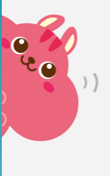
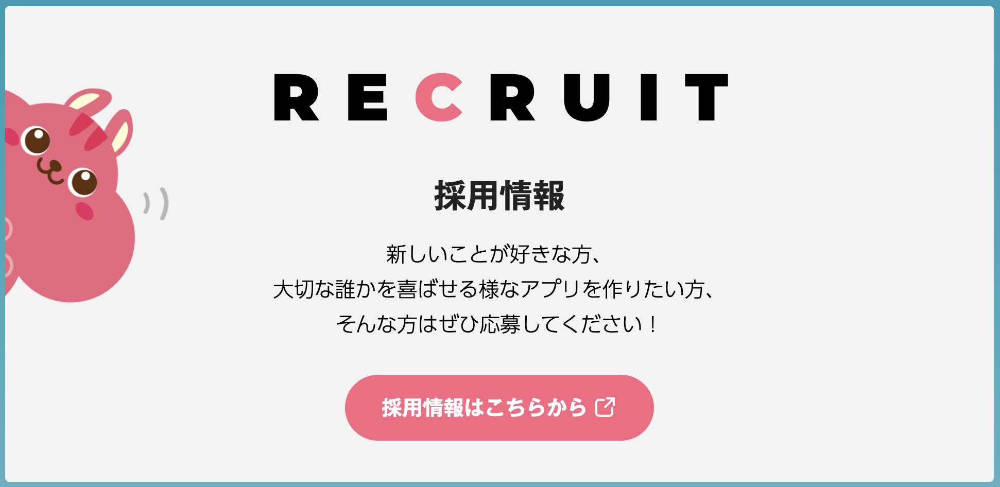

血統・配合派
龍之介
「父系と母系をたどれば、阪神2200mの顔つきが見えます」
- スタミナ血統、道悪適性、内回りで粘れる配合を見る。
- 馬柱を家系図として読むので、説明が妙に叙情的。
Claude Opus
high effort
k-ba-man strategy deck
独立した10人の agent が、血統・統計・展開・馬場・オッズを別々の角度から読み、最後に平均でノイズをならす作戦会議です。
about me

wisdom of crowds
これは雰囲気ではなく、Diversity Prediction Theorem で出てくる数学的な帰結です。一人の予想に出る癖も、独立した複数予想を平均すると打ち消されやすくなります。
だから作戦はシンプル。そこそこ当てる10人を、違う理由で悩ませる。
Source: Scott E. Page, Diversity Prediction Theorem / Crowd Beats Averages Law
4 conditions
race operation
agent 01-02
「父系と母系をたどれば、阪神2200mの顔つきが見えます」
「印象はログに残りません。数字をください」
agent 03-04
「3角で息が入って、4角で一斉に動く未来が見えます」
「指数が高い！ じゃあ速い！ たぶん勝つ！」
agent 05-06
「時計より、最後の1Fでまだ余ってるかです」
「市場は賢いです。でも時々、全員で同じ勘違いをします」
agent 07-08
「馬は強い。でも誰が乗るかで、強さの出方が変わります」
「みんなが見てる馬？ じゃあ一回、横を見ます」
agent 09-10
「穴は買いません。まず3着内に来る馬からです」
「今日は外が伸びる。土と風がそう言っとる」
final tactic
10人が同じ馬を同じ理由で推したら、ただの合唱です。違う理由で推し、違う理由で疑い、最後に確率を混ぜる。k-ba-man の作戦はそこにあります。
run 202609030411 | final ensemble
集約: Borda Count + confidence加重 Log Pooling。個別予想は見せず、最後の統合版だけを採用。
betting portfolio | decided by AI
入力は集約確率だけ。誰がどの馬を推したかは資金配分AIに見せていません。

Wantedly 採用情報はこちら